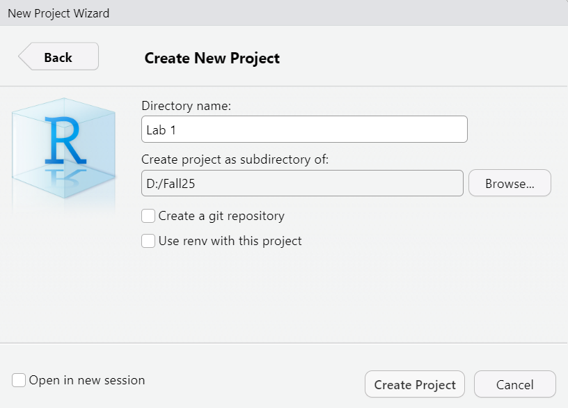
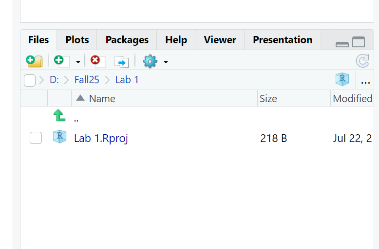
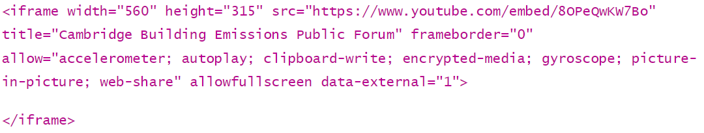
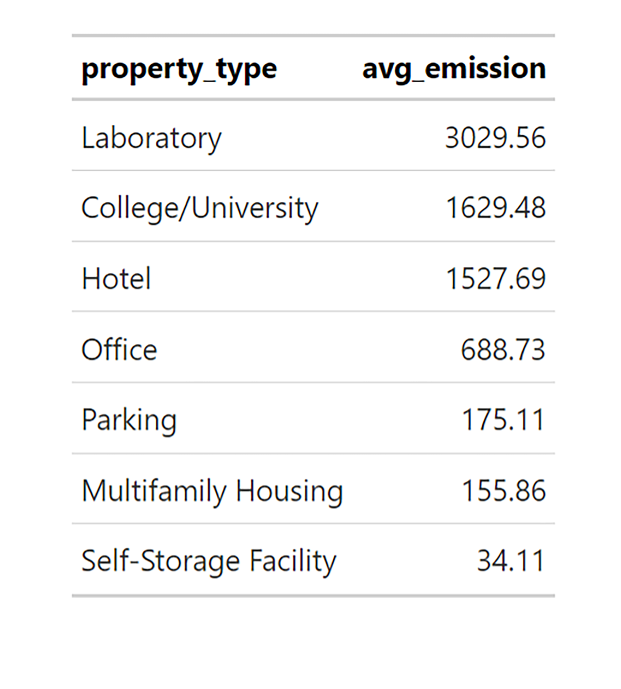

energy <- energy |>
select(
data_year = `Data Year`,
BEUDO_category = `BEUDO Category`,
owner = Owner,
year_built = `Year Built`,
property_type = `Primary Property Type - Self Selected`,
ghg_emission = `Total GHG Emissions (Metric Tons CO2e)`,
ghg_intensity = `Total GHG Emissions Intensity (kgCO2e/ft2)`,
longitude = Longitude,
latitude = Latitude
) Get started with 
11.118/11.218 Applied Data Science for Cities
In this exercise, we will first practice working with Quarto Document. Then we’ll dive into a dataset to see how we can start pulling out useful information.
Work with Quarto Documents
Set up a New Project
We have talked about looking for files paths in class,
- Import dataset using direct path: ❌ Not recommended. Hard-coded paths break easily.
- Manually set up a working directory
setwd(): 😕 This works fine until when you want to move your working folder or share your work. You’ll constantly need to re-set the directory. - Set up a Project: 🎉 Recommended. R projects organize all files related to a project in one place and setting up relative file paths. Let’s start by setting up a project for our exercise.
Launch RStudio, then click File - New Project… A dialog box will open up. Select New Directory, then New Project. Here, you can create a new folder to save everything related to this project. For example, I chose my D:/Fall25 folder and created a new folder there called Lab 1:

Click the button “Create Project”. R will take a second to refresh.
Then you will see in your Files tab that you have been directed to your current working directory: D:/Fall25/Lab 1. You will also see a .Rproj file in that folder.

The .Rproj file serves as a reference point that R uses to locate all files associated with the project. If you save all files related to Lab 1 in this folder, all relative paths remain intact and consistently applied.
Note: In future sessions, I may provide you with a project folder containing data. As long as you launch RStudio by double-clicking the .Rproj file, you will be taken directly to the project’s home directory.
Practice formatting text with Quarto
Now go to File - New File - Quarto Document to create a new Quarto document. The prompt shown below will appear. Type in a document title (e.g. Lab 1) and your name. Keep the radio button for HTML selected.
You will then see a template file. At the very top you will see the YAML (or “Yet Another Markdown Language”) header which begins and ends with three dashes ---. The YAML header determines how your document will be rendered to your desired output format. Now it specifies the title, author, output format and text editor.
To get an idea of how everything works, let’s click the “Render” button on top of your toolbar.
When prompted, give this file a name, it should be saved in the folder where your “.Rproj” file is, as a .qmd file.
You will now see a formatted document in a web browser. Switch between your code and the document back and forth to see where each part of the code is placed in the rendered HTML file.
There can be other options specified in the YAML, particularly if you are rendering to a format other than HTML (such as pdf, or Word, see all formats).
On the very left of this toolbar, click the “Source” button to switch Markdown editing mode. These sections of text typically explain or provide context for the code and graphics, and they are formatted using Markdown syntax. For example:
- #: a header element.
- **: bold text.
- *: italic text.
- ` : code blocks.
Overall, the Visual interface looks pretty much like a Word document. There is a toolbar that allows you to edit text formats, create a bullet list, insert a link or an image, insert a code block, etc.
Now let’s delete everything below the YAML header in this test file, so that we will start creating our own formatted report.
Exercise
In 2014, the City of Cambridge passed a local ordinance on building energy use disclosure. Spend a few moments reviewing this website to become familiar with the ordinance (in general).
Then, add 2-3 sentences below your YAML section that explain the following:
- What does the Building Energy Use Disclosure Ordinance require?
- What kind of data have been compiled and where to find them?
You may edit your text either in the “Source” or “Visual” panel, or toggle between them to get familiar with both. Make sure to make gratuitous use of bold, italics, bullet points, etc. in your text.
When you finish, save your file and click Render again. You can immediately see your nicely formatted document in a web browser.
Insert a video
You’ve probably noticed there is a YouTube video on the Cambridge webpage, which is a recording of their Cambridge Building Emissions Public Forum on September 15, 2022. Let’s assume that the video hosted on that webpage might be useful for others who view our rendered document. We can insert the video in Quarto and it will render in the output when we knit the document.
All you need to do is embed the video in your document. Right-click on the video, select “Copy embed code.” Then, paste that embed code into your Markdown section in the “Source” panel.

We don’t need to know lots of details of this html code, but to put things into context:
- The
<iframe>tag wraps everything about this video. - The
srcattribute provides the URL for the video - The remaining attributes outline the specifics of how the video will appear.
For our purposes, the most important of these attributes is data-external=“1”. This attribute is typically NOT SPECIFIED in the embed code you find on the web by default and YOU WILL NEED TO ADD IT in order for video content to render in your output. This attribute is currently required for Quarto to properly render video content.
Exercise
Embed this video in your document after the introductory sentences you have written. Render your document again and look at your work.
Download and read data
Quarto Document integrates both texts and code chunks. Code chunks are where the R code lives in a document. These are easy to spot as shaded blocks leading by {r}. (In the Source panel, they always have three backticks followed by {r}).
{r}
1 + 1In accordance with the ordinance, the City maintains BEUDO data for individual properties from 2015-2023. You can view this data on the Cambridge Open Data Portal. Take a few moments to explore the dataset by scrolling down the page and viewing the “What’s in the Dataset” sections in particular.
Now download this dataset in CSV format. Let’s create a new “data” folder in your project folder and save your table there. The file name is pretty long, to avoid typos, we can rename it to “energy.csv”.
Check if you have installed the tidyverse package: Click the Packages tab in your lower-right panel in RStudio. Type “tidyverse” in the search box. If it’s NOT shown in the list, go to your Console panel and run install.packages("tidyverse")
Insert a code chunk in your Quarto document by going to Code - Insert Chunk. I usually use the shortcut key RStudio provides (Alt+Ctrl/Cmd+I). Type a few things in the chunk and make it look like the following:
{r}
#| message: FALSE
#| warning: FALSE
library(tidyverse)All lines led by the symbol #| are chuck options (described in detail here). They are optional. If you remove these two lines, the code runs, but will display a lot of background information below your code chunk. (You can totally try removing them and adding them back to see what they do). Here we decide to suppress all warnings and messages that might otherwise appear in the rendered HTML output.
Run this code chunk to load tidyverse package. You can either click the green triangle on the top-right of this chunk, or use Ctrl/Cmd+Enter.
Note: Why I said running install.packages("tidyverse") in the console but library(tidyverse) in the code chunk? You only need to “install” a package once, so there is no need to keep it in the script and run it every time you render the document. However, you must “library” (i.e.: activate) the package each time to use its functions.
Exercise
Take a moment to study the read_csv() function. As its name suggests, it will read our .csv file into R. Note that read_csv is located within the readr package, which is part of the tidyverse suite of R packages.
Insert a new code chunk, write a line of code that imports your .csv file and assigns it to an object called
energy.Run your code chunk. You will be able to see the “energy” variable in your Environment tab.
Use the functions
colnames()andglimpse()to get some essential information about this dataset.colnames()display the names of all columns.glimpse()provides a quick review of the data frame, including the data type of each column (e.g., integer, numeric, factor, character).
Key dplyr functions
dplyr is a package within tidyverse, specializing in data manipulation and transformation. It provides a set of functions that work with data frames in a clean and consistent way. Explore more of dplyr functionality described here. We are going to walk through some essential “verbs” of dplyr.
Select: selects a subset of columns.
In the energy dataset, we probably don’t need all of the 67 columns. So we can make it a smaller dataset by specifying a few columns to keep.
dataset |> select(Column1, Column2)
Insert a new code chunk in your document to select a few variables. You don’t need the copy and paste the code below, let’s type the variable names ourselves to see what shows up along the way. You can type the pipe |> operator using Shift+Ctrl/Cmd+M.
energy |>
select(
`Data Year`,
`BEUDO Category`,
Owner,
`Year Built`,
`Primary Property Type - Self Selected`,
`Total GHG Emissions (Metric Tons CO2e)`,
`Total GHG Emissions Intensity (kgCO2e/ft2)`,
Longitude,
Latitude
) Some of the column names are surrounded by backticks (`), that’s because they include special characters or spaces (such as spaces and () ). The use of backticks is to preserve these unique names. If you just keep typing the column names, dplyr will populate the correct names for you.
But we want to make the columns names clean and easy to read. That’s why we usually rename the columns using snake-case naming conventions while we are making selections.
Click the energy variable in your Environment panel now to browse this smaller dataset that only include 9 variables, with clean column names.
Note: <- and |> look quite similar but it’s important to distinguish them. |> works data through functions but doesn’t store the result unless assigned. <- assigns (stores) the result to a variable.
filter: Select a subset of rows
Now let’s create a new dataset that only contains energy use records from MIT buildings.
dataset |> filter(<condition>)
Take a look at how we achieve this using the following code:
{r}
energy |>
filter(owner == "MASSACHUSETTS INSTITUTE OF TECHNOLOGY")Results will be showing in your console. You’ll notice that some entries are missing records for total GHG emissions, which appear as NA under the “ghg_emission” and “ghg_intensity” column. If we want to simplify the dataset by keeping only the rows with valid GHG emission records, we can apply that as an additional filter condition too.
Proceed to insert a new code chunk in your document like the one below. Now we are filtering with two conditions: MIT buildings, and have emission data. We are assigning the result to a new variable “mit_energy”.
mit_energy <- energy |>
filter(owner == "MASSACHUSETTS INSTITUTE OF TECHNOLOGY") |>
filter(!is.na(ghg_emission))is.na() is a function commonly used to check whether each value in a column is missing (NA). The ! is a logical negation operator, so !is.na() checks for values that are not missing. It returns TRUE for non-missing values and FALSE for missing values.
Summarise: Create a summary of your data
Go ahead and run the following code and observe how we got the result:
mit_energy |>
summarise(avg_emission = mean(ghg_emission))# A tibble: 1 × 1
avg_emission
<dbl>
1 1510.It calculates the average of the column “ghg_emission” of the entire dataset, and names the result “avg_emission”. The result says, of all MIT buildings, through all years, the average annual GHG emission is ~1510 MTCO2e.
summarise calculates summary statistics, like a total, mean, or count, across all values in the dataset. However, when used along with group_by(), it calculates each group separately, collapsing each group into its own summary row.
For instance, below we calculate the average GHG emissions by data_year, which is the year when the energy record was taken.
mit_energy |>
group_by(year = data_year) |>
summarise(avg_emission = mean(ghg_emission))# A tibble: 9 × 2
year avg_emission
<dbl> <dbl>
1 2015 1625.
2 2016 1480.
3 2017 1572.
4 2018 1493.
5 2019 1541.
6 2020 1448.
7 2021 1483.
8 2022 1484.
9 2023 1462.This says, in 2015, the average annual GHG emission was ~1625 MTCO2e., and in 2016, it was ~1480 MTCO2e., so on and so forth.
Exercise
Insert a few new code chunks below this one to document your code and show your results.
From the
mit_energydataset, create a subset of all non-residential buildings, that were built before the year 2000. (Hint: which function would you use?). How many such buildings are there?From the
mit_energydataset, compare the GHG emissions by property type (Hint: which column has this information?), and generate a table that shows the following results:
You can create this table mostly by modifying our example code, however, there are a few small things you can experiment on:
- The calculated average numbers in this table are rounded to 2 decimals, how to achieve that?
- The table is arranged in descending order based on the “avg_emission” column, how to do that? (Hint)
We are already asking questions and finding insights from the dataset! If the results in this table look interesting/surprising/expected to you, write a few sentences describing what you see from the analysis.
------Lastly, and just for fun, copy and paste the following code to your document. No need to understand any of the details right now. If your R says it can’t find mapview, run the line install.packages("mapview").
#install.packages("mapview")
library(mapview)
mapview(
mit_energy |> na.omit(),
xcol = "longitude", ycol = "latitude",
crs = 4326,
grid = FALSE
)The dataset we have includes “longitude” and “latitude” columns, which I love, because it indicates that location information is readily available and can be visualized.
Now Save, Render your document again. You have now created a nice report using Quarto!
------In this lab we have introduced how to create and develop a Quarto Document. We have also worked with a few commonly-used dplyr functions including select, filter, group_by and summarise. This is the beginning of our data wrangling and leads to the work next week.
Lab Report
Please assemble your Quarto document to include your work and responses for each of the four Exercises included in this lab.
To finish it up, add one more line to your YAML header: embed-resources: true

This ensures all your pictures, media, and maps will be correctly displayed.
Once you are ready, render the Quarto document again. You will find an “.html” file in your project folder. This is your lab report this week. Please submit the Rendered HTML file to Canvas by 9am Wednesday, Sep 17.